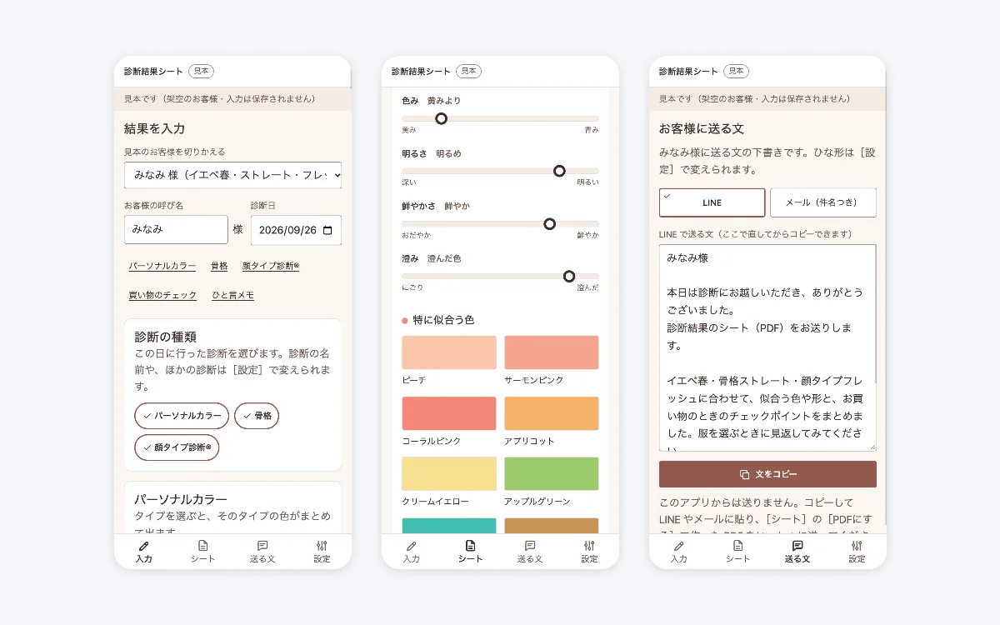
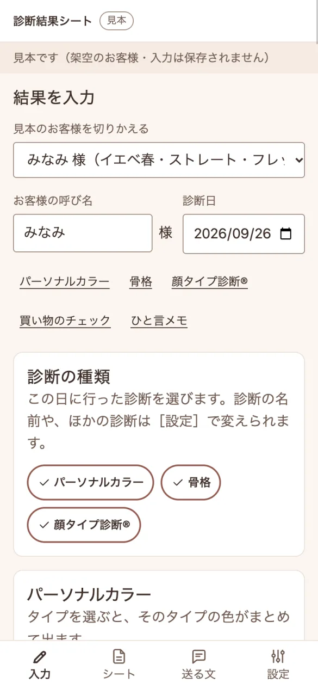
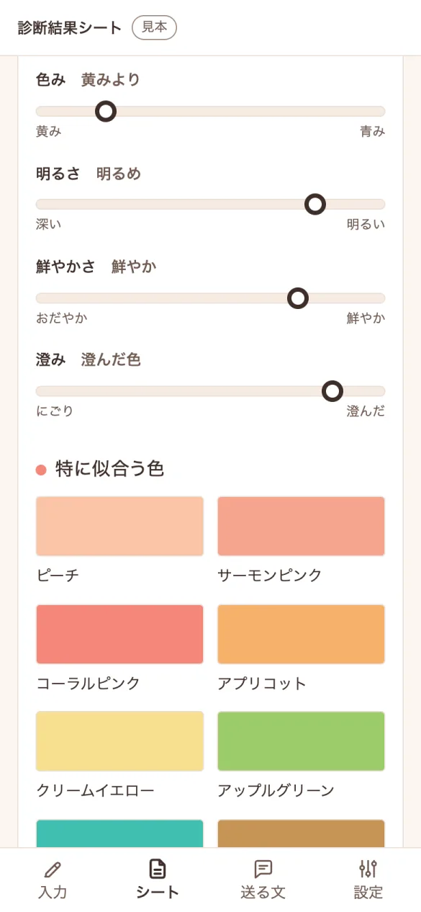
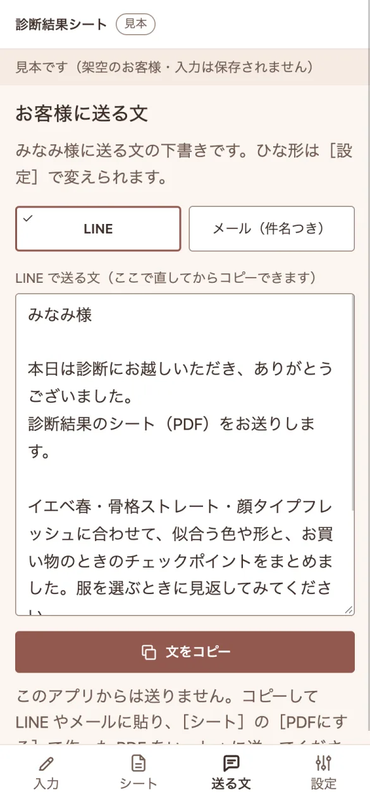

診断のあとに送る結果シートの作成アプリ
パーソナルカラー・骨格・顔タイプなどの診断を行う個人の診断士が、診断のあとに結果を選んで入力するだけで、お客様用の結果シートと、送るときの一言の下書きを作れるWebアプリです。シートはスマホで見やすく、PDFにも保存できます。ポートフォリオ用の架空の案件として、企画から開発まで行いました。

困りごと
「診断が終わったあと、結果シートをCanvaなどで1人ずつ作っていて、時間がかかる。お客様は、診断結果を実際の服選びにどう使えばよいか分からず、あとから質問が届く。」
そこで、結果を選ぶだけで整ったシートができ、買い物のときの見方まで1枚にまとまる形を目指しました。診断の名前や項目は、診断士が自分のやり方に合わせて変えられます。
作ったもの

結果を選ぶだけで入力できる
診断の種類と結果を選び、ベストカラー・苦手になりやすい色・似合う形や素材・ひと言メモを入れます。入力すると、お客様用のシートがすぐに変わります。

お客様が見返せる結果シート
色見本・似合う形や素材・買い物のときのチェックポイント・診断士のコメントを、1枚にまとめます。スマホで見やすく、PDFにして保存もできます。

送るときの一言を下書きする
LINE用とメール用（件名つき）の文を、お客様の名前と診断結果を入れて作ります。その場で直して、コピーできます。このアプリからは送りません。
画面は、架空のお客様のデータを入れて撮影しています。
工夫したこと
- 診断の名前と項目を、診断士が変えられる
- 診断の名前、結果の呼び方、似合う形や買い物のチェックポイントの候補を、設定で足したり変えたりできます。診断士ごとのやり方に合わせられます。
- 結果を入れていない所は、シートに出さない
- 入れた項目だけがシートに並びます。空の見出しや、「未入力」の文字がお客様に届くことはありません。
- 買い物のときに使える形にする
- 色見本と、似合う形・素材に加えて、お店で見るときのチェックポイントをまとめます。診断後の「どう選べばよいか」という質問を減らすためです。
- 色の特徴を、ものさしで見せる
- 色みや明るさなどを、言葉だけでなく、ものさしの図で示します。お客様が、自分の色の傾向をひと目でつかめます。
- きつい言い方をしない
- 「似合わない」とは書かず、「苦手になりやすい」「工夫すると使える」と書きます。お客様が前向きに受け取れる文にしています。
進め方
次の3つの観点で整理して作っています。
- 目的から決める
だれが・いつ・何のために使うかを先に決め、「どうなれば完成か」を1つずつ言葉にする
「診断のあとの作業を軽くする」「お客様が服選びに使える」を目的に、機能ごとに「どうなれば完成か」を決めました（例: 結果を選ぶと、同じ画面のシートに反映される）。
- 続けられる使いやすさ
文字の大きさ・色の濃さ・押しやすさを、決めた基準で確かめる
診断士が診断のあとにスマホで入力し、お客様もスマホで見る前提で、文字の大きさと押しやすさを決めました。色見本の見え方が変わらないよう、シートの地は白にしています。
- データの安全
どのデータをどこへ送ってよいかを先に決め、保存や通信をしない作りにする
入力した内容は保存せず、外へも送りません。お客様の情報の唯一の置き場所にならないよう、元のデータは診断士の手元に残る作りにしました。
安全とデータの扱い
- 入力した内容は、ブラウザに保存しません。画面を閉じると消えます。
- 外のサービスへ通信しません。お客様の名前や診断結果が、外へ送られることはありません。
- 送る文は、コピーして診断士ご自身がLINEやメールに貼ります。アプリが自動で送ることはありません。
- 商標登録されている診断名を使う場合は、その旨を画面に示します。
納品物のイメージ
- Webアプリ一式
- 画面のファイルをまとめてお渡しします。サーバーは要らず、お使いのサイトや共有の場所に置くだけで、スマホとPCのブラウザで使えます
あわせて、次の資料もお付けします。
- 動作確認の記録
- 何を確かめて、どうだったかの一覧
見本は架空の案件のため、一部そろっていない資料もあります。この見本には、使い方の手順書と設計書はありません。画面写真は、架空のデータで撮影しています。